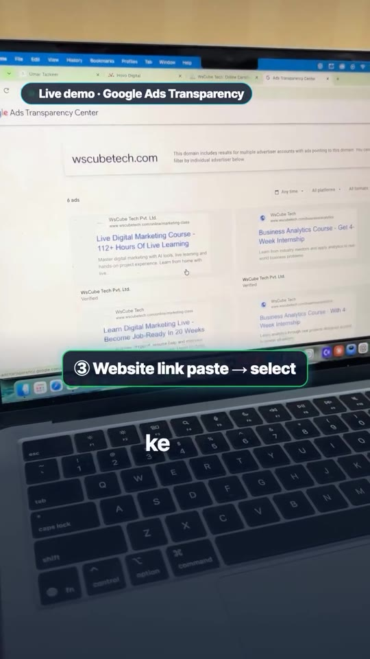
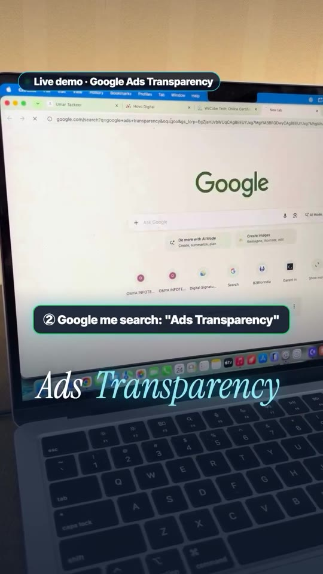
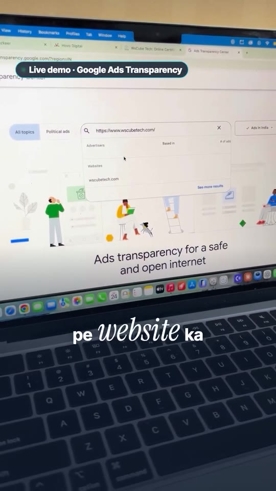

Marketing · Competitor-Research
Auditing Competitor Google Ads via Google Ads Transparency Center
A practical 3-step workflow for competitive ad intelligence on Google. While Facebook advertisers use Meta Ads Library, Google advertisers can uncover any competitor's active search, display, and video campaigns, exact headline copy, creatives, and ad formats using the official Google Ads Transparency Center (adstransparency.google.com).

Steps / Workflow
- Copy Competitor Domain: Obtain the exact root website URL of your target competitor (e.g.,
wscubetech.com). - Access Google Ads Transparency Center: Navigate to adstransparency.google.com (or query “Ads Transparency” on Google and select the top official Google result).
- Search by Domain / Advertiser Name: Paste the competitor's website domain into the search bar (“Find the ads you've seen by searching by advertiser name or website”) and select their verified legal entity from the autocomplete dropdown.
- Analyze Active Ads & Formats:
- Ad Volume: Check total number of live ads currently serving across all accounts linked to that domain.
- Placements / Formats: Filter and observe whether they run Search text ads, Display banners, or YouTube Video ads.
- Creative & Copy Audit: Inspect exact headlines, value propositions, offer hooks, and landing page angles to benchmark your own PPC strategy.
Workflow Walkthrough


Verbatim Breakdown
| Timestamp | Screen / Source | Verbatim Content |
|---|---|---|
00:00 |
On-screen card | • ₹10,000 CHALLENGE • DAY 08 Competitor ki ads kaise dekhein? 👀 |
00:04 |
On-screen badge | Facebook → Ads Library ✅ |
00:07 |
On-screen badge | Google pe kahan? 🤔 |
00:16 |
On-screen step | ① Competitor ki website ka link |
00:35 |
On-screen step | ② Google me search: “Ads Transparency” |
00:38 |
On-screen URL | adstransparency.google.com/?region=IN |
00:43 |
On-screen step | ③ Website link paste → select |
00:51 |
Spoken (audio) | “WsCube Tech ki jo company hai woh chhe ads chala rahi hai aur saari jo ads hai woh search ads hain aur ek ads isme inhone jo chala rakhi hai woh video ads hain.” |
01:02 |
On-screen summary | Isse pata chalega sab kuch • Kaunsa placement: Search | Display | Video • Unki headlines • Apni ads strategy banao |
(caption) |
Post Caption | Competitor ki Google ads kaise dekhein? 👀 ₹10,000 Challenge · Day 8 Facebook pe Ads Library hai… par Google pe? Ye hai Google Ads Transparency Center 👇 1️⃣ Competitor ki website ka link copy karo 2️⃣ Google me search karo “Ads Transparency” aur pehle link pe click karo 3️⃣ Website link paste karo aur select karo Bas! Ab dikhega: ✅ Competitor kitni ads chala raha hai ✅ Search, display ya video, kaunse placement pe ✅ Unki headlines Isko analyse karke apni ads strategy, headlines aur descriptions banao 🚀 Google Ads aur Facebook Ads ke aise updates ke liye follow karo, aur achha laga to comment karo 💬 #10kchallenge #googleads #adstransparency #competitoranalysis #performancemarketing #digitalmarketing #facebookads #enovetmedia #marketingtips #ppc |
Tools & Resources
- Google Ads Transparency Center: https://adstransparency.google.com/ — Google’s public searchable database of verified advertiser creatives across Search, YouTube, and Google Display Network.
- Meta Ads Library: https://www.facebook.com/ads/library/ — The corresponding free tool for Meta/Instagram ad competitive research.
Try This
- Identify 3 direct competitors in your niche who bid on your primary commercial intent search terms.
- Search each domain inside Google Ads Transparency Center.
- Filter by “Any time” or last 30 days, and observe which headlines recur across multiple ad variants (indicates their highest-CTR angles).
- Note any video creatives they run on YouTube and examine their opening hooks and offers.
Open Questions
- Google Ads Transparency Center only displays ads from advertisers that have completed Google’s Advertiser Verification program. Unverified accounts or newly launched accounts may not appear in search results until verification is finalized.